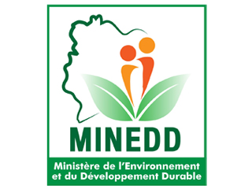
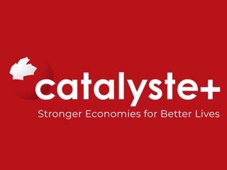
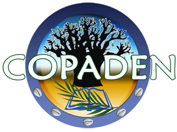
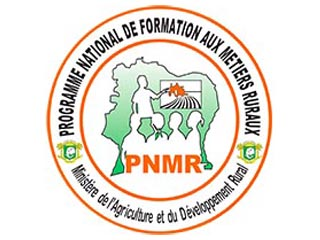
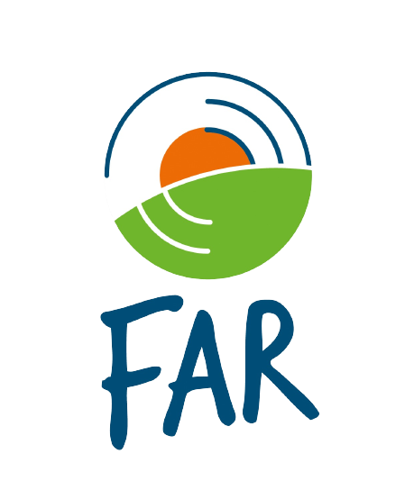

Nos partenaires
Ils ont voulu nous accompagner dans cette grande aventure






Créée en 2017, la FONDATION MARIE-ESTHER est une organisation sans but lucratif qui œuvre pour le développement humain durable. Elle intervient dans les domaines de l’Éducation au développement durable, le Développement Communautaire, l’agriculture durable, la santé et la nutrition. Sa vision est d’être un catalyseur de changement durable des personnes et des communautés par la promotion des valeurs humaines et écologiques.
Le développement humain durable implique des valeurs telles que la responsabilité partagée de notre avenir commun et notre engagement collectif pour une société plus juste pour toutes et tous.
Dans sa mission, elle accompagne les populations à réaliser leur plein potentiel dans une démarche de développement durable à travers des actions de sensibilisation, formation et accompagnement à la mise en œuvre des projets.
L’idée de la création de la FONDATION MARIE-ESTHER résulte de la volonté de ses membres d’apporter de façon concrète des changements sociaux et économiques durables tenant compte des enjeux du développement durable, pour le bien-être de la population notamment les communautés rurales désavantagées relativement
Nous accompagnons les personnes et les communautés particulièrement rurales à travers une approche participative, à réaliser leur plein potentiel, dans une démarche de Développement Durable.
Nous voulons être des acteurs du changement durables des personnes par la promotion de valeurs humaines et écologiques.
Abidjan, Yopougon 3ème pont à 10m du centre de Gestion Intégrée
(+255) 2523001331/36 – 0708970834
contact@fondationmarieesther.ci